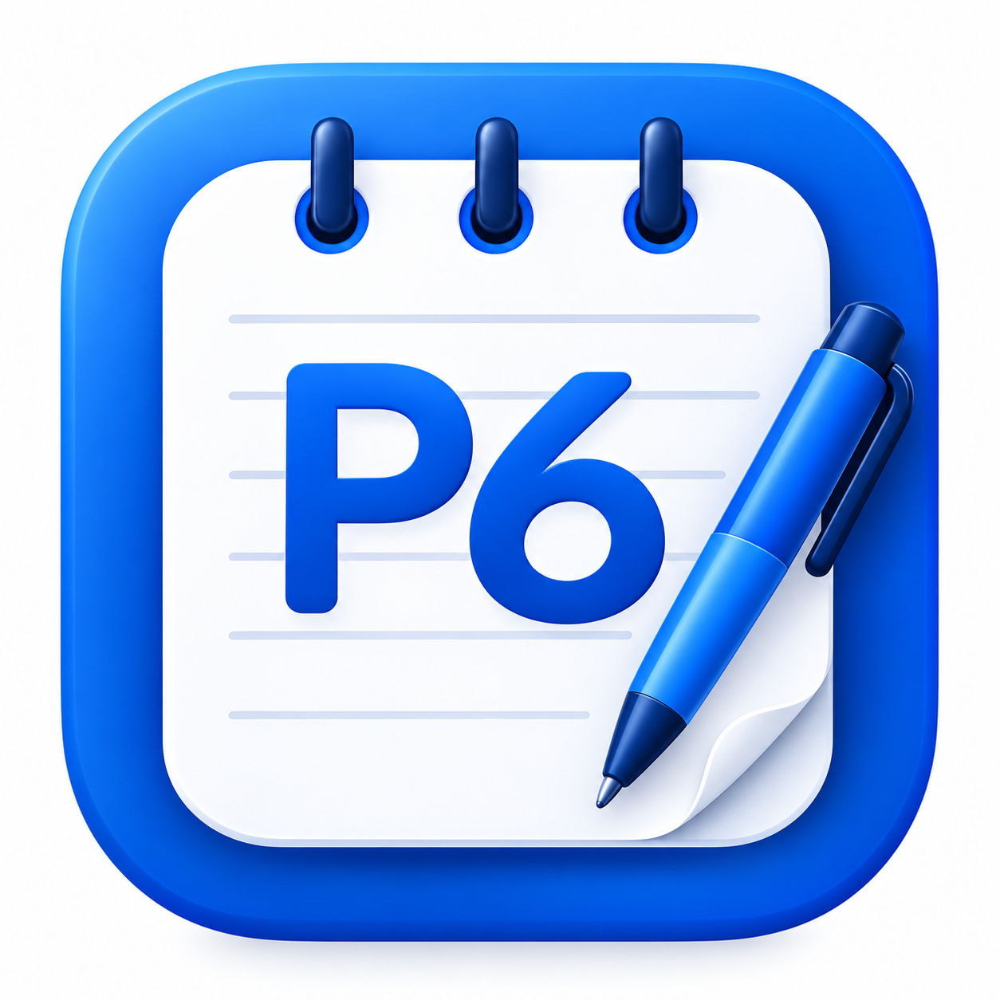
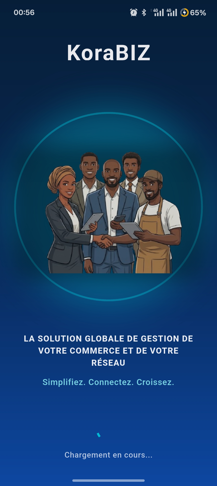
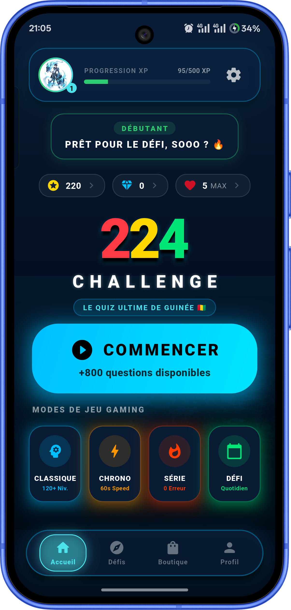
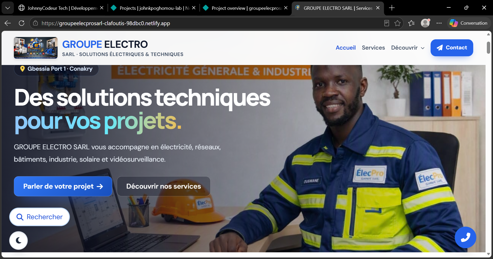

Création de sites web
Des sites vitrines modernes pour présenter votre entreprise, vos services et vos activités.
Parler de mon projet →Nous concevons des sites web professionnels, des applications mobiles et des outils de gestion pour accompagner les particuliers et les entreprises dans leur développement.
Des services numériques pour donner vie à vos idées et faciliter vos activités.
Des sites vitrines modernes pour présenter votre entreprise, vos services et vos activités.
Parler de mon projet →Des applications mobiles pratiques, modernes et adaptées aux besoins de vos utilisateurs.
Parler de mon projet →Des outils pour gérer les ventes, les clients, les stocks et les opérations de votre entreprise.
Parler de mon projet →Des jeux mobiles interactifs et des expériences numériques conçues autour de vos idées.
Parler de mon projet →Intégration de services en ligne, authentification, bases de données et synchronisation.
Parler de mon projet →Amélioration de l'interface et de l'expérience utilisateur de vos sites et applications.
Parler de mon projet →Découvrez une sélection de mes applications et projets numériques.




Des produits numériques conçus pour répondre à des usages concrets : présenter une entreprise, apprendre, jouer et mieux gérer son activité.
Code. Créativité. Innovation.
Je suis développeur d'applications mobiles et de solutions web. À travers JohnnyCodeur Tech, je conçois des produits numériques pensés pour répondre à des besoins concrets.
Mon approche repose sur l'écoute, la simplicité, la qualité du développement et la recherche de solutions utiles aux particuliers et aux entreprises.
Un accompagnement clair, humain et orienté vers des solutions réellement utiles.
Nous clarifions votre besoin, vos utilisateurs et vos priorités avant de commencer.
Votre image est travaillée pour être moderne, lisible et adaptée à votre activité.
Votre site ou application peut grandir avec votre entreprise et vos nouveaux besoins.
Vous bénéficiez d’un suivi simple et d’un contact direct à chaque étape du projet.
Un processus simple pour avancer sereinement.
Vous présentez votre idée et vos objectifs.
Nous définissons les fonctionnalités, le budget et les délais.
Je conçois et développe une solution claire et performante.
Nous testons, mettons en ligne et préparons la suite.
Chaque projet est personnalisé après l’analyse de vos besoins.
Pour présenter votre entreprise, vos services et faciliter la prise de contact.
Site vitrinePour piloter vos ventes, vos clients, vos stocks ou vos opérations.
Application sur mesurePour lancer une application mobile, un jeu ou une idée innovante.
De l’idée au lancement★★★★★“Une solution pensée autour d’un besoin réel, avec une présentation claire et professionnelle.”
Projet digital — Groupe Electro Pro
★★★★★“L’objectif est de rendre la technologie utile, simple à comprendre et accessible aux entreprises.”
JohnnyCodeur Tech — Notre engagement
Si votre question n’est pas ici, contactez-moi directement sur WhatsApp.
Écrire sur WhatsApp →Le prix dépend du périmètre, des fonctionnalités et du niveau de finition. Le formulaire permet de recevoir une proposition adaptée.
Le délai est confirmé après l’analyse du besoin. Un petit site et une application complète n’ont pas le même calendrier.
Oui. Les échanges, validations et suivis peuvent être réalisés à distance, quel que soit votre lieu.
Oui, la maintenance, les évolutions et l’assistance peuvent être prévues dans une formule adaptée.
Décrivez votre besoin grâce au formulaire de commande. Nous pourrons ensuite discuter des fonctionnalités, du budget et des délais.